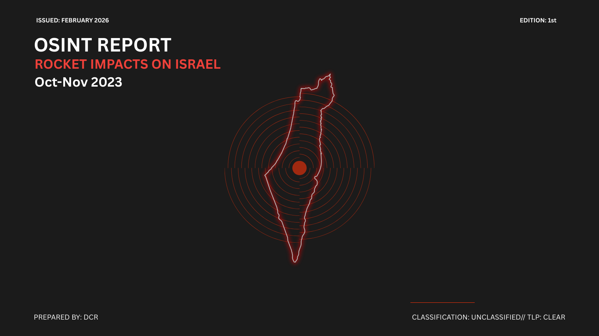

Investigation Reports

Published
Rocket Impact Verification
Geospatial and chronological analysis of two rocket impact events across Israel. Multi-feature architectural triangulation with High Confidence verification.
In Progress
Cross-Border Trafficking Routes
Structural and geographic analysis of human trafficking corridors across South America using satellite imagery, UNODC data, and open-source court records.
About This Lab
Mission
Independent open-source investigations into conflict events, human rights issues, and geopolitical developments. All findings derive exclusively from publicly available sources, ensuring full reproducibility and transparency.
Core Methods
- Geospatial triangulation & architectural matching
- Chronological cross-validation with official alert logs
- Satellite imagery analysis & change detection
- Multi-source verification frameworks
- Structured confidence assessment